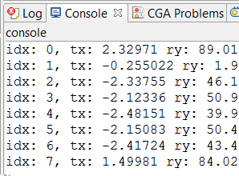

print operation
Synopsis
print(a)
Parameters
- a (float | bool | string | float[] | bool[] | string[])
Value (or variable / shape attribute) to print.
Prints the passed variable to the "console" console.
Related
Examples
Printing some stuff
|  |
Lot-->
extrude(16)
split(y) { 2 : r(scopeCenter, 0, rand(90), 0)
print("idx: " + split.index +
", tx = " + scope.tx +
" ry = " + scope.ry)
X. }*
The rule above prints some information about the split nodes, see the screenshot on the left. |
Copyright ©2008-2019 Esri R&D Center Zurich. All rights reserved.